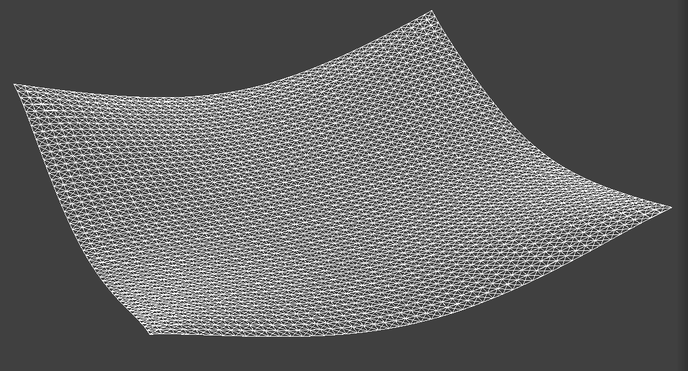
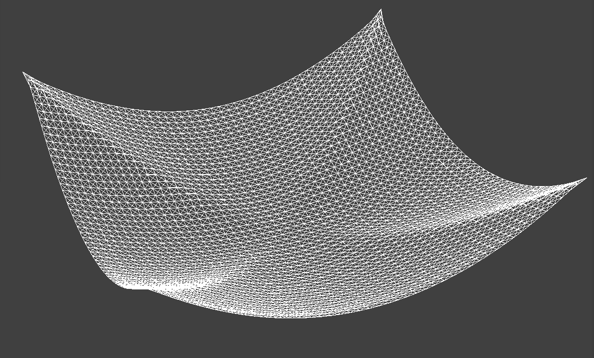
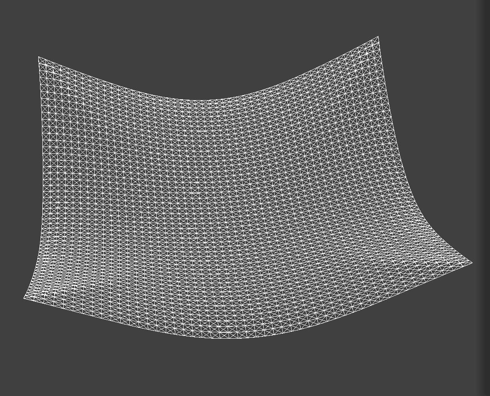
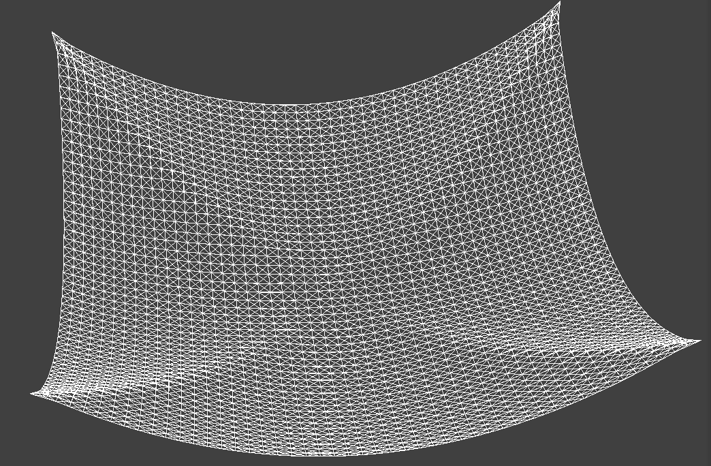

CS184/284A Spring 2025 Homework 4: Cloth Simulation

Overview
In this assignment, I implemented a physically-based cloth simulator. I built a mass-spring system to represent the cloth's internal structure, applied numerical integration to simulate movement over time, and implemented collision detection to allow the cloth to interact with spheres, planes, and itself.
Part 1: Masses and springs
In this part, I implemented the physical construction of the cloth using
a mass-spring system. The process involved two main
steps: generating a grid of PointMass objects and
connecting them with Spring constraints to simulate the
physical properties of fabric.
1. Grid Construction
I implemented Cloth::buildGrid by iterating through
num_height_points and num_width_points. For
each point, I calculated its position based on the cloth's orientation:
- Horizontal: The points are spread across the XZ plane with a constant Y-coordinate of 1.0.
- Vertical: The points are spread across the XY plane with a small random Z-offset (between 0 and 0.001) to break symmetry and prevent numerical instability.
I also cross-referenced each $(x, y)$ coordinate with the
pinned vector to set the pinned boolean for
specific point masses, ensuring they remain stationary during
simulation.
2. Spring Constraints
To give the cloth its structural integrity, I implemented three types of spring constraints:
- Structural: Connects a point mass to its neighbor directly to the left and directly above.
- Shearing: Connects a point mass to its diagonal neighbors (upper-left and upper-right).
- Bending: Connects a point mass to neighbors two units away (to the left and above) to provide resistance against folding.
3. Wireframe Visualizations (pinned2.json)
The following images show the wireframe structure of
scene/pinned2.json. By toggling specific constraints, we
can clearly see the different topologies created by the spring types.

Only structural and bending springs are visible. |

Only diagonal springs are active. |

The complete mass-spring system. |
|
Part 2: Simulation via numerical integration
In this part, I implemented the physical movement of the cloth using
Verlet Integration and handled constraints to ensure
the cloth doesn't over-stretch. By modifying parameters like
ks, density, and damping, I
observed how the cloth's material properties change.
1. Effects of Spring Constant ks
The ks value represents the stiffness of the springs.
-
Low
ks: With a very lowks(e.g., 50 N/m), the cloth behaves like a very soft, stretchy fabric (like thin spandex or silk). It exhibits significant sagging and many small, fine wrinkles as it falls to its resting state. -
High
ks: With a highks(e.g., 50,000 N/m), the cloth becomes much stiffer, behaving more like heavy canvas or thick leather. It resists stretching, resulting in fewer, larger folds and a flatter appearance at rest.

ks: Very stretchy and saggy.
|

ks: Stiff with large, structural folds.
|
2. Effects of Density
Density affects the mass of each PointMass, which in turn
influences how gravity pulls on the cloth.
- Low Density: The cloth feels "lighter." It sags very little and reaches its resting state quickly with minimal downward pull.
-
High Density: The cloth feels "heavy." The
gravitational force (
mass * g) overpowers the spring forces, causing the cloth to sag significantly and stretch the springs further before reaching equilibrium.
|

|

|
3. Effects of Damping
Damping simulates energy loss (like air resistance or internal
friction). In my code, this is implemented as
(1 - damping/100) applied to the velocity term.
- Low Damping: The cloth is extremely "bouncy" and takes a long time to come to rest. It oscillates back and forth significantly after being released.
- High Damping: The cloth moves as if it is submerged in a thick liquid (like oil). It falls slowly and gracefully, coming to rest almost immediately without any oscillation.
4. Final Resting State (pinned4.json)
Below is the shaded cloth from scene/pinned4.json in its
final resting state using the default parameters (ks = 5000, density = 15, damping = 0.2%).
scene/pinned4.json at rest with default parameters.
Part 3: Handling collisions with other objects
In this part, I implemented the interaction between the cloth and other 3D primitives (spheres and planes) by calculating collision responses that push the cloth's point masses back to the surface of the objects.
1. Implementation Details
-
Sphere Collision: For each point mass, I check if its
distance from the sphere's origin is less than or equal to the radius.
If a collision is detected, I calculate a
tangent point on the sphere's surface by extending
the vector from the origin through the current position. The point
mass is then moved toward this tangent point using a correction vector
originating from its
last_position, scaled by(1 - friction). -
Plane Collision: I use the dot product of the point
mass's position (relative to a point on the plane) and the plane's
normal to determine if the cloth has crossed from one side to the
other. Upon crossing, I calculate the intersection point (tangent
point) and offset it slightly by
SURFACE_OFFSETto prevent the cloth from getting stuck inside the plane. The final position is updated similarly using a friction-scaled correction vector from thelast_position.
2. Sphere Collision Results (scene/sphere.json)
Varying the spring constant ks significantly alters the
cloth's stiffness and how it drapes over the sphere:

The cloth is very soft and stretchy, clinging tightly to the sphere with many small folds. |

The default stiffness shows a natural drape with moderate structural integrity. |

The cloth behaves like heavy canvas, resisting deformation and resulting in fewer, larger folds. |
3. Plane Collision Results (scene/plane.json)
The following image shows the shaded cloth lying at rest on the plane. The collision response ensures the cloth remains on the surface without clipping.

Part 4: Handling self-collisions
To simulate realistic fabric folding without the cloth passing through itself, I implemented a spatial hashing algorithm to efficiently detect and resolve self-collisions.
1. Implementation Details
-
Spatial Hashing: I implemented
hash_positionto partition 3D space into uniform grid boxes. EachPointMassis mapped to a unique float key based on its coordinates. In each step,build_spatial_mappopulates anunordered_map, allowing me to only check collisions between points in the same box. -
Collision Resolution: For each point mass, I iterate
through other points in its hash bucket. If two points are closer than
2 * thickness, I apply a correction vector to push them apart. These corrections are averaged and applied to the position, scaled down bysimulation_stepsto ensure stability.
2. Cloth Falling and Folding (scene/selfCollision.json)
The sequence below captures the cloth as it falls, makes initial contact with itself, and eventually settles into a folded state.

|

|

|
3. Parameter Analysis
The behavior of self-collision is highly dependent on
density and ks:
- Density: Increasing density makes the cloth heavier. Higher density leads to more compression and more frequent self-collisions, resulting in a cloth that appears to "squash" more into its own folds.
-
Spring Constant (ks): A higher
ksincreases the cloth's resistance to bending and stretching. Whenksis high, the cloth maintains larger, more open folds and resists overlapping. With lowks, the cloth collapses easily, forming intricate and tightly packed folds.

|

|
Part 5: Shaders
Work in progress.
(Optional) Part 6: Extra Credit
Work in progress.